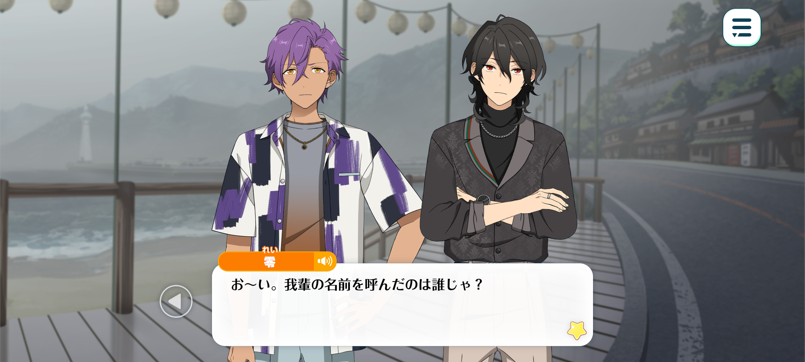
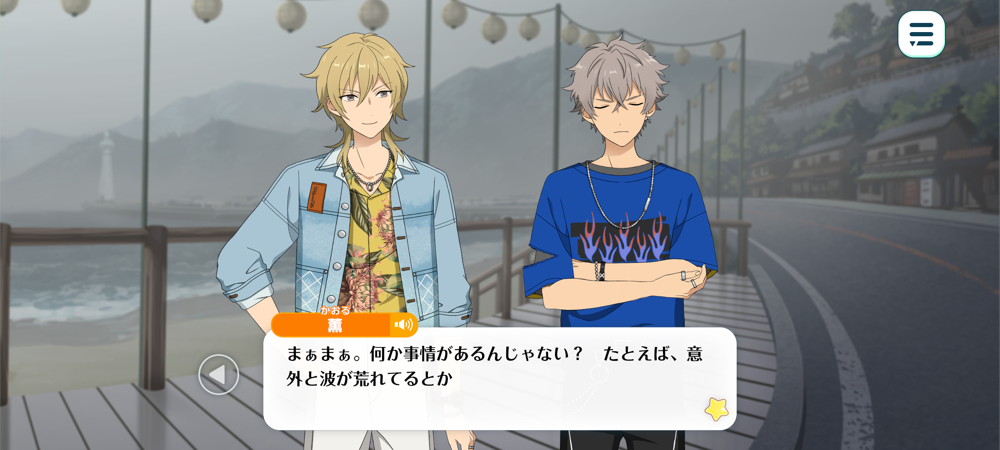
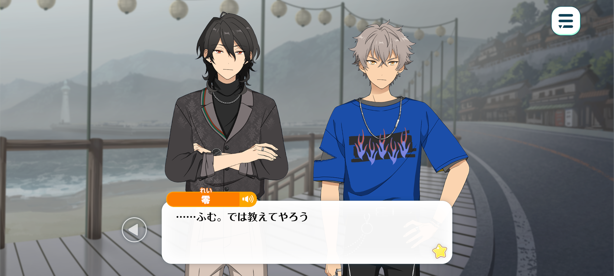
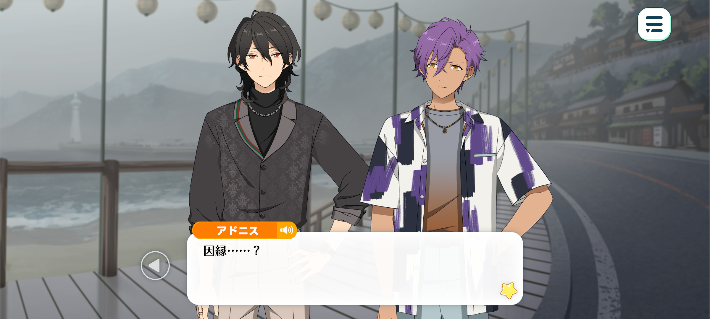
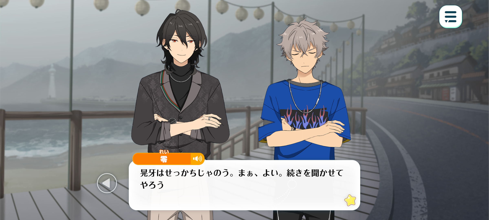
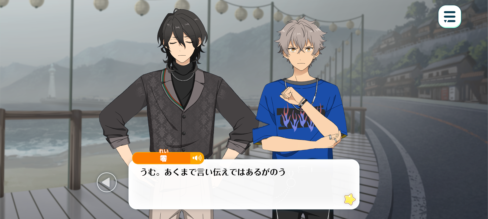

Velvet Ship
Haul To The Wind / Chapter 1



Adonis: …Hm? I believe Sakuma-senpai is back.
Rei: Did somebody call~?
Kaoru: It was this little puppy over here. He was starting to whine.
Koga: I wasn’t whinin’! ‘n don’t call me puppy!
Rei: Kukuku. Were you lonely without me? Goood boy, who’s a good boy ♪
Koga: Grrrahh! Don’t pet my head like that, I’m not your dog!
Rei: Don’t go barking at me now. Here, I’ve brought you a souvenir.
Koga: A souvenir? …What the hell is this? A keychain?
Rei: Apparently, it’s part of an effort to revitalise the city, so the municipal office has been handing them out. Those who take the boat over are supposed to get one for free.
On that note though, we are still in a bit of a bind regarding the boat…
Kaoru: I guess we’re not gonna make it after all, huh?
Rei: I’m afraid not. I asked them again and again, but they insisted that there was nothing more they could do.
Koga: Tch. Bureaucratic red tape, huh? Buncha stubborn arseholes.
We can see the outline of the island, even through all this fog! I dunno why they’re actin’ like it's so damn dangerous!

Kaoru: Well, there’s probably a reason for it, right? Like the sea conditions aren’t safe for sailing right now.
When it’s this foggy, you can use radar to help you navigate, but it doesn't mean you can see everything that’s around you. There could still be things like rocks or shallow water that you need to watch out for.
And if we weren’t careful, we could end up running aground. Then we’d have an even bigger problem on our hands…
Rei-kun asked but if the people who know these waters are telling us not to go, there’s probably a good reason for it. Maybe the locals know something we don’t.
Haste makes waste, they say. Apparently, the idea dates back to the days when travelling by land was safer than taking the shorter route by boat. Just because something’s faster doesn’t mean it’s worth taking the risk.
If we got into trouble out there, we’d be putting a lot of other people in danger too. So I think it’s better to play it safe.
Koga: …I get what you’re sayin’ ‘n all, but—
It’s an island. We can’t exactly go by land. And it’s not exactly like we can swim there. I get that it’s dangerous, but shouldn’t we at least give it a go?
Are you really okay with jus’ stayin’ here another day? You really wanna go home empty handed when we haven’t even tried? Huh?
…Sakuma-senpai, you’ve been quiet. I’m sure you’ve got an opinion on this .
We came all the way here, right? Are you really gonna take no for an answer? That doesn’t sound like you.

Rei: …Hm. I suppose I had better explain, then.
From what I was told, the reason we cannot sail today has rather less to do with the whims of nature…
…and more to do with something somewhat more supernatural. You see, apparently, whenever a particularly thick fog descends upon this town, a ghost ship is said to appear.
Kaoru: A ghost ship… right…
Ahaha! Seriously? A ghost ship? Here, of all places?
Rei: Now, now, don’t laugh. They told me this story with such solemn expressions that I felt I had little choice but to take their word for it.
The fog is certainly remarkably dense today. And the waters around here are deep enough, so there shouldn’t be any particular danger of running aground.
But you see… That isn’t the real reason they are refusing. This town, it seems, has a rather more mysterious connection to the sea.

Adonis: A connection…?
Rei: Indeed. A long time ago, this city was nothing more than a humble fishing town. Whenever the fog rolled in, the fishermen would stay ashore, patiently waiting for it to lift before venturing out to sea.
Until, one fateful night… A colossal shadow emerged from the mist. Slowly, silently, it drifted across the surface of the water.
At first, the villagers had no idea what they were seeing. Some thought it might be a whale. Others wondered if some ancient creature of the deep had risen from the ocean floor…
But when the mysterious vessel finally drew close enough for them to see it clearly, they realised it was a ship from a distant land. Its rudder had been damaged in a violent storm, leaving the vessel at the mercy of the sea. For who knows how long, it had simply drifted upon the waves…
Until, at last, the currents carried it to their shores.
The villagers were understandably hesitant to approach such an ominous sight. But eventually, curiosity overcame their fear. And when they finally step foot aboard the ship… They discovered that every last member of its crew was already dead. Nothing remained aboard the vessel but the crew’s belongings… And a vast hoard of gold, silver, and other treasures.
From the ship’s strange construction and the attire of the deceased crew, the villagers came to a rather chilling conclusion. The ship had belonged to pirates!
Kaoru: ...Rei-kun’s way of speaking is perfect for ghost stories.
Rei: You think so too? Why, I was giving myself goosebumps as I told it.
“Ghost stories with Rei Sakuma”. I’m sure the kiddies would adore that ♪

Koga: Focus, man! Just get on with the story!
Rei: Koga is such an impatient little boy. Well, I suppose I shall continue, if you’re all willing to listen.
Here in Japan, there is the belief that, no matter how one meets their end, their soul will eventually become one with the Buddha.
Ideally, then, the remains of those poor sailors should have been given a proper burial…
But the very word “pirates” struck fear into the villagers’ hearts… whilst the promise of gold and silver was more than enough to awaken their greed.
And so, in the end, they took the treasure for themselves…and left the bodies where they lay.

Koga: ...Seriously?
Rei: Mhm. Well, that is how the legend goes.
And, of course, we should not be too quick to judge people of the past by the standards of today.
There was no electricity nor fresh water flowing freely from their taps. These were people who lived from one day to the next, never knowing whether they would have enough to eat tomorrow.
According to the tale, the village prospered. The pirates’ treasure lined their pockets, and over time, the little fishing village grew into a great town. How much of that is true is rather difficult to ascertain.
The town hall does have several artifacts on display, though, Among them is supposedly a fragment of the ship’s sail. So perhaps the story isn’t entirely without truth.
In any case, the legend says that whenever the fog settles over the shore, a battered pirate ship will emerge from the mist. And aboard it… a crew of restless, ghostly sailors.
So many people claim to have witnessed the ship that this place has become something of a pilgrimage for enthusiasts of the occult.
Koga: …Like I said, we can’t let some old wives’ tale stop us from doin’ our job.
We’re literally undead. I ain’t afraid of no ghosts!
If it’s not the weather, then let’s go.
There’s loads of boats in the harbour. I’m sure somebody’ll let us hitch a ride.